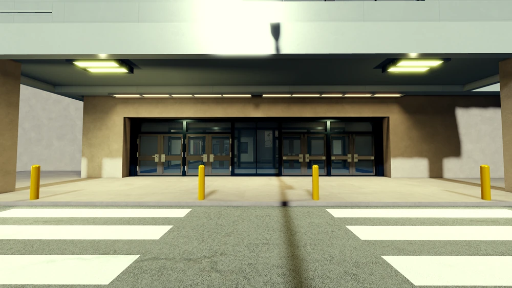
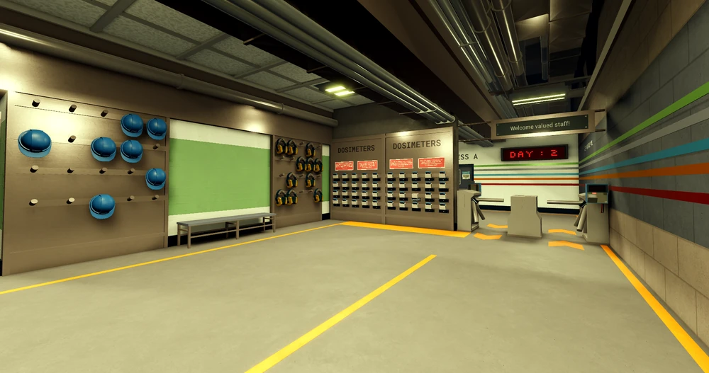

Entrance

- Drive left of spawn until you see a sign that says "Welcome to Oakridge"
- Turn right, then left after crossing the railway
- Interact with Hugh and give them your card
- Turn right into the parking lot
Staff Intake

- Go through the entrance and turn right
- Go down the hallway and checkpoint until you reach the spin gate
- Scan your card at the keycard reader while holding it, then click on the spin gate
- Take the elevator or stairwell to the Lower Level (LL for elevator)
- Turn right, then right again, then left until you reach the area with the dosimeters
Control Room


Overview
The Control Room is the nerve center of the facility, with advanced consoles and monitoring systems.
How to Access
- Enter through Staff Intake.
- Pass dosimeter gates by scanning while holding the dosimeter.
- Use Plant Access A and take the elevator to L3.
- Turn left twice to arrive at the Control Room.
Alternative Route
- Take elevator to L2 from Staff Intake.
- Turn right and go through Plant Access B.
- Pass dosimeter gates again.
- Take elevator to L3 and follow signs to Control Room.
Video Guide
Credit to NEODIS for the walkthrough.
Reactor Hall

- While in the staff intake area, go through Plant Access A
- Turn right and scan your keycard to enter Sector 1, then click on the doors
- Walk through the dosimeter gates and scanner
- Walk forward until you see a door that leads to "Sector 1A - 2AB"
- Go through the door
- Walk down the corridor and turn right
- Use the stairwell or elevator to reach Level 3 (Top of the stairwell, L3 for elevator)
- Go through Sector 2
- Walk through the dosimeter gates and scanner
- Go down the corridor and through the doors (Do not go to the Orion Skybridge)
- Keep going until you reach the end of the corridor
- Turn right and enter the Reactor Hall
- Make sure you wear a hazmat suit (located left of the stairwell entrance)
- Go up the stairwell until you reach "Reactor Hall Level 4"
- Go through the door
- Click cycle, wait until the light turns green, then click on the valve
- Go inside and close the door
- Click cycle again and wait until the second door unlocks
- Then click on the second door